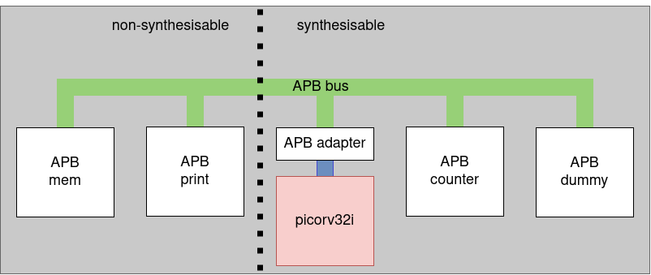

A system on a chip or SoC stands in contrast to the traditional PC or laptop which are organised around a motherboard. In the third Bachelor of this program an entire course was spent on this topic: System-on-Chip design and experimentation. If you need a refresher, please head over to the website.
The figure below shows an example of a SoC that we can build with what was seen before. At the hearth of the system is the RISC-V processor (picorv32i). The bus system that connects all the components together is an APB bus. Critical readers might point out the native memory interface of the picorv32i does not fit the APB-bus. A custom adapter is made to make this connection feasible (APB adapter). As you might have already spotted, the picorv32i already comes with two other adapters: 1 for connecting to an AXI bus, and 1 for converting to a wishbone interface.

The APB memory and the APB print components were already discussed. It is pointed out once more that both these components are actually models. The HDL code of these components is non-synthesisable, meaning: it’s valid HDL code, but it cannot be converted into hardware.
Finally, the APB counter component was discussed in the previous page, and the APB dummy is simply a placeholder for any other core.
One question that is not solved yet is how memory mapped IO (MMIO) is configured. To make live a bit easier (it’s already too complicated anyway 😉) the configuration is done in the package: PKG_hwswcodesign.
...
constant C_BASE_ADDRESS_0 : STD_LOGIC_VECTOR(C_DATA_WIDTH-1 downto 0) := x"00000000";
constant C_HIGH_ADDRESS_0 : STD_LOGIC_VECTOR(C_DATA_WIDTH-1 downto 0) := x"00003FFF";
constant C_BASE_ADDRESS_1 : STD_LOGIC_VECTOR(C_DATA_WIDTH-1 downto 0) := x"80000000";
constant C_HIGH_ADDRESS_1 : STD_LOGIC_VECTOR(C_DATA_WIDTH-1 downto 0) := x"80000004";
constant C_BASE_ADDRESS_2 : STD_LOGIC_VECTOR(C_DATA_WIDTH-1 downto 0) := x"81000000";
constant C_HIGH_ADDRESS_2 : STD_LOGIC_VECTOR(C_DATA_WIDTH-1 downto 0) := x"81000FFF";
constant C_BASE_ADDRESS_3 : STD_LOGIC_VECTOR(C_DATA_WIDTH-1 downto 0) := x"81100000";
constant C_HIGH_ADDRESS_3 : STD_LOGIC_VECTOR(C_DATA_WIDTH-1 downto 0) := x"81100FFF";
...SECTIONS {
.memory : {
. = 0x000000;
*(.init);
*(.text);
*(*);
. = ALIGN(4);
end = .;
}
}These constants set both the base address and the high address of the four components. Which values you choose here, is completely up to you. One traditional technique is to have the memory start at 0x0. This is also reflected in the linker-script (firmware.lds).
Every component gets its base address (BA) and high address (HA) configured through generics (or parameters for you .v people). The component can/could/should/may/… check these limits to see whether or not communication is intended for them. The APB bus also checks this to determine if the component needs to be talked to or not. Don’t forget to make the correct modification on ALL (package, component, and APB-bus) locations if you want to modify the memory map.